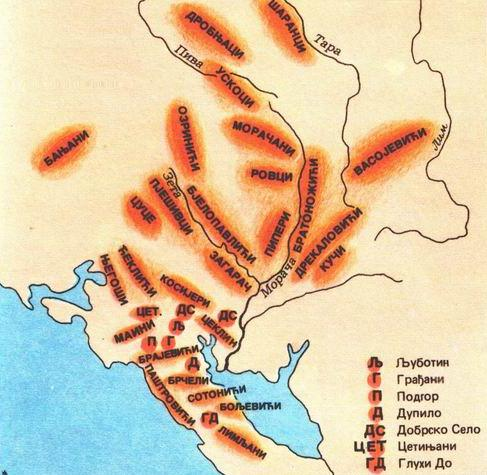

Поријекло

Из књиге „Бјелопавлићи“ Петра Шобајића
Бошковића кућа на Орјој Луци одавно је предњачила и била глава племену. Предање зна за најдаље из ове куће о већ неколико пута поменутом харамбаши Петру Бошковићу. Он је најистакнутији јунак бјелопавлићски. Како рачунају био је син или унук Бошков, од кога води име ово братство. Његовом брату, попу Милутину, се приписује у заслугу што се владика Василије задржао у Бјелопавлићима и настанио у манастиру Острогу. Прича се да му је владика дао благослов, те вјерују да се ово братство по томе толико подигло.
Били су из ове куће старешине манастира Острога у 18. веку Максим и Јосиф Бошковић. О њима ћемо доцније говорити. У великом покрету у другој половини 18. века против Турака, истакао се био јако поред других поп Раде Бошковић, који је предводио главаре бјелопавлићске, кад су пошли владици Петру I на договор ради заједничког и сложног рада против Турака. Предање зна и о неком Ристу Симонову Бошковићу, који је помогао Алилагиће из Спужа, њиховог бега Зотовића, у борби против скадарског паше.
Вукашину Радојеву Бошковићу дао је владика Петар I благослов, а сина му Мијајла поставио за сердара. На његовим је рукама владика преминуо. Помиње сердара Мијајла народна песма о боју са Махмут-пашом Бушатлијом у Мартинићима 1796. године. Са Мијајла је сердарство прешло на сина му Рама, па на Мата, сина Рамова. Потомци Мијајлови зову се на уже братство Мијајловићи или Сердаревићи.
Са Мијајловића је водство прешло на друго уже братство Бошковића, на Кезуновиће. Кезун је био брат сердара Мијајла, а син Вукашинов. Кезунов син Новак је погинуо 1809. године кад је са владиком Петром ударао на Никшић. Његови потомци су се истакли као најгласитији Бјелопавлићи. Један му је син поп Ђоко, постао први капетан Петрушиновића, а други, Видо, био је перјаник па после тајник и саветник владике Рада и кнеза Данила. Бајо, син Видов, био је најпре командир Бјелопавлића, па после члан сената на Цетињу. Он је један од најпознатијих Бјелопавлића. Предводио их је при удару на Клек и у боју на Вучјем долу, а умро је те, 1876. године. Син је његов Блажо, који је погинуо 1912. год. пред ударом на Скадар, био бригадир бјелопавлићски. Да поменемо још и многих других чувених људи у племену од ове куће попа и војводу Риста Бошковића. Његова је жена била Јана, сестра кнеза Данила. Он је титулу војводску добио као заслужан племеник, био је члан сената.
Стојећи на челу племена, а као јака главарска кућа, Бошковићи су били познати и ван свог племена. Поред њих су још као најпознатија кућа у Бјелопавлићима Радовићи у Мартинићима. Раније, док су Бошковићи били у највећој снази, имале су обичај жене, кад ко наиђе и пита, јесу ли јој људи код куће, да одговоре: људи су на Орјој Луци (тј. Бошковићи). Сем Кадића, за које смо већ рекли, завидила су Бошковићима и гонила се с њима и друга јака братства у племену, али су они успјевали све надгорњати. Особина им је да су били јаки племеници, заступали су свуда интересе и углед племена, они су им били пречи него лични интереси, те су и тиме освајали племе и побјеђивали противнике. Тако се прича, кад је узета од Турака Лола планина, нудио је тада кнез Никола Бошковићима, да им даде дела у планини и то из племена само њима. Они су захтевали да се у Лоли да дела целом племену, па кад то нису могли добити, одбили су да приме и део за себе. Најјаче су они осетили увреду коју је кнез Данило, долазећи са својом свитом у Острог 1856. године, нанео племену дирнув у част жена брдских. Побунили су се тада иа за мало кнеза нису убили, те су морали бежати у Скадар, одкуда су доцније повраћени.
Бошковић, у Подгорици 1431. год.; Будва 1688. год.; Кути и Бијела, Херцег-Нови 1695. год.; Камено и Крушевице (Бока Которска) су из Мостића (Херцеговина) као: Паликућа; Херцег-Нови, по нахочету; Леденице (Рисан) 1399. год.; Бијела Смоква (Кањош) у Буљарици (Паштровићи); Подгорица 1435. год.; Богумиловићи у Пјешивцима, раније: Брешкован. Од њих су у Будви и Никшићу; Бјелоши (Цетиње); Чево, село Пејовићи и као: Бошковић - Пејовић, у Цуцама, сродни су Миљановићима из подручног Репца. Од њих су у Никшићу, а у подручном Грахову и као: Бошковић - Градињанин; Градина у Ћеклићима (Цетиње); Бјелице (Цетиње), од њих су у Котору; Ријека Црнојевића, и као: Бошковић - Колашинац, поријеклом из Поља (Колашин); Вигњевићи (Ријека Црнојевића) и као: Бошковић - Љуботињанин, поријеклом из Вучитрна, Косово; Грађани (Ријека Црнојевића), старинци, од њих у Мркојевићима (Црногорско Приморје); Веље Село (Бар), из Доњих Микулића уз Бојану; Глухи До и Сотонићи (Црмница) и као: Миросалић. Они су огранак Вучетића; Голубовци (Зета); Брчеле и Лимљани (Црмница); у Цуцама, поврх Мелаца, огранак Мијановића, поријеклом из Зете (Аџова Врба), гдје их више нема; На Главици (Бјелопавлићи), огранак Калуђеровића; Слатина и Вучића - под Зелетином; Платоом (Бјелопавлићи), једни раније: Илић; Орја Лука (Даниловград) и Острог (Бјелопавлићи), потомци Бијелог Павла. Од њих су Трипуновић у Матагужама (Зета), Добоју (Босна) и Сењак на Руднику, једни су одселили у Мачву; у Пјешивцима као: Риђан, па Кезуновић и Мијајловић (Сердаревић) преселили у Паштровиће; из Пјешиваца неки су преселили код Ваљева и други у Петељевац (Крушевац); Никшић и сусједна Страшевина; Паштровићи 1702. год.; Заград (Жупа Никшићка), огранак су Милончића из подручних Дучица; Ливеровићи (Жупа Никшићка), огранак Павловића, потомка Никшића. Од њих су у Ровцима (Подгорица), Колашинско и Мојковачко подручје; код Мојковца, касније Фуштић, поријеклом из Грбља; Мојковац, огранак Шћепановића, из Борја лијеске (Ровца); у Требаљеву (Мојковац), једни и као: Којиновић; Морача (Колашин), доселили из Љешкопоља, поријеклом из Грбља; Морача, потомци Богдана Чевљанина, из Војинића (Цетиње); Кричак и Колашин (Пљевља) и као: Бошковић = Алиловић, доселили из Козице преко Таре, као: Мацан; Брвеница, Ковач (Пљевља) и Лијеска (Пљевља); Бобово (Пљевља) па су прешли у подручни Градац и Јелов Пањ па у Ритошиће и Калуђеровиће (Пљевља); Пренћани, Маоче и Буковица (Пљевља); Готовуша (Пљевља), па у подручне Колушише и околна насеља; Ровца (Подгорица); из Црне Горе у Пиеру (Албанија); Тиват; Гараши (Крагујевац) као: Бошковић (Савић) па Гарашанин поријеклом из Бјелопавлића; Кумбор (Бока Которска), из Кривошија; Подгорица 1431. год.; код Херцег-Новог, једни су из Попова (Херцеговина); Леденице и Рисан 1399. год.; Кумбор, Убли и Смирна, Херцег-Нови; Муо и Прчањ (Котор), Доњи и Горњи Столив (Бока Которска), поријеклом су из Ћеклића (Цетиње); у Подгорици 1435. год.; Загора и Радовићи (Тиват) 1594. год.; из Богмиловића (Пјешивци) има исељених у: Спуж, Бјелопавлиће, Призрену, Међулужје (Шумадија); у Богмиловићима (Пјешивци) потомци Тодора из Велестова (Цетиње); Вигњевићи (Ријека Црнојевића), поријеклом су од Вучитрна (Косово); Грађани (Ријека Црнојевића), од њих су у Доброј Води (Бар); Цеклин (Ријека Црнојевића), од њих су у: Шекуларе (Горњи Васојевићи), Ритошићи (Сјеница); У Морачу из Лијешња (Ровца) овдје из Војинића (Чево), Цетиње поријеклом из Херцеговине; Кисјелице (Братоножићи) и као: Мијајловић; Поткрш и Сеоштица (Братоножићи); Шекулари (Горњи Васојевићи). Огранак Масловара. Огранак Калуђеровића у Велици и Доњој Ржаници (Васојевићи) јесу из Ћеклића (Цетиње); Једни су у Васојевићима огранак подручних Адровића. Шекулари (Горњи Васојевићи), огранак подручних Адровића. Шекулари (Горњи Васојевићи), огранак подручних Бракочевића поријеклом из Цуца (Цетиње). Од њих су у: Беранама и код Бијелог Поља; Градина (Бјелопавлићи), раније: Богумиловић. Њихови су сродници у Голубовцима (Зета); у Подгорици дошли су огранак Раичевића други огранак Терзића; у Кучима: 1) Из Медуна (Кучи) преселили се у Плав; 2) Из Убала преселили у Бар; У Лопарима, једни као: Костровић; Брестовик (Бијело Поље), Плужине (Пива), доселили из Сјенице (Рашка), од њих су Мићић; У Рељеву (Сарајево); грана Војиновића у Пиви и одселили у Босну.